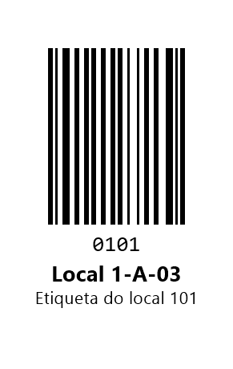
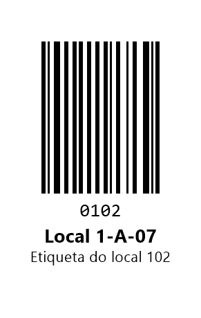
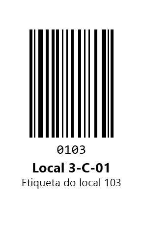
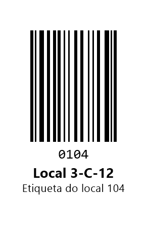
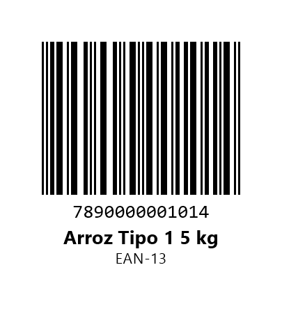
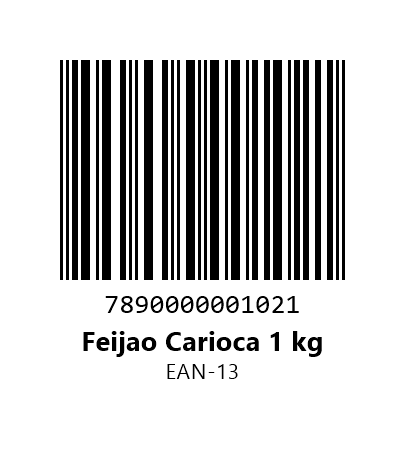
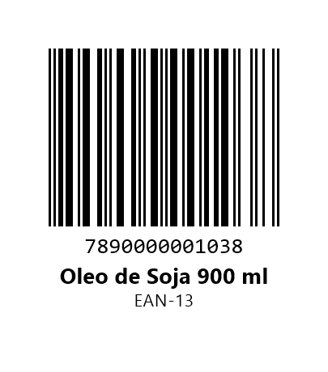
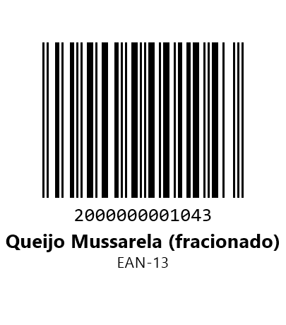
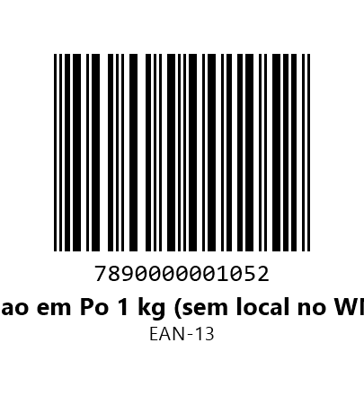

Blue-WMS — demo test barcodes
Scannable location labels and product barcodes for reviewing the app.
Demonstration data only. These barcodes point to fictitious orders, products and warehouse locations on a demo server. They carry no real customer information.
How to use
- Open the app and complete Settings and Login as described in the store listing.
- Allow camera access when asked. Picking is only available with the camera.
- On the home screen, tap Iniciar separação. The app opens the next order in the queue (order 48213). Tap Separar itens.
- For each item, point the camera at this page: first the location label shown on the item, then the product barcode. Tap Confirmar to record it. Use + to pick more than one unit at once.
- Scan the location label again before every product, even when it is the same location.
- When you are done, tap Finalizar. Unfinished items can be finalized anyway: tap Finalizar again and confirm.
Location labels




Products

7890000001014
7890000001021
7890000001038
2000000001043. Sold by weight: tap
Quantidade and type the amount, for example 3.25.
7890000001052. Has no location in the
warehouse system: scan any location label above, then this barcode, and confirm the
warning.